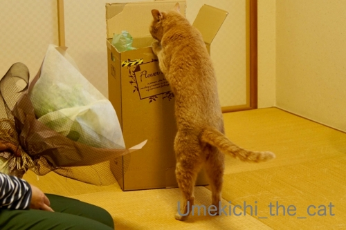
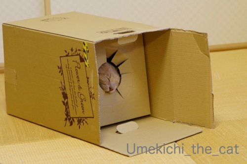
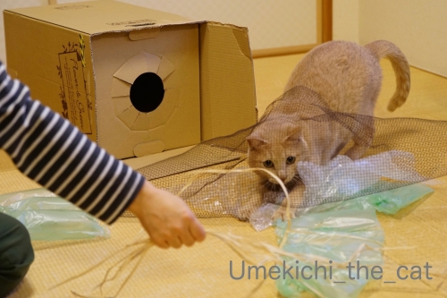
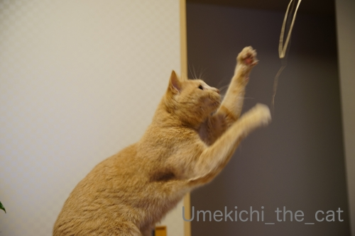
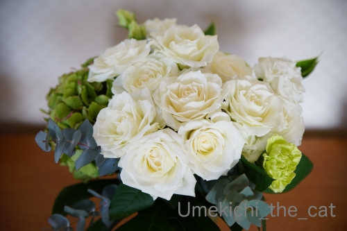

箱と漁網と華麗なヒモと [梅吉]

これ、なーんだ？

予想はしてましたけど興味は箱へ。ねこまっしぐらですよw

吸い込まれていく後ろ姿とあちにはいつも見惚れてしまいます。
そんな猫変態は私だけー！？


楽しそうでなによりです( ´艸｀)

今年はラッピングに使われていた漁網みたいなネットが大ウケ！


わたしのヒモさばきが華麗だ、と自画自賛した一枚。

興奮しすぎて訳がわからなくなって走り去っていくのはいつものことw

落ち着いたところでやっとお花に興味を示しましたよ。

一緒にパチリです＾＾

でもやっぱり興味はヒモ！！
先日、結婚記念日でした。
今の所記念日ディナーなどの予定は立てていません。
世の中が落ち着いたあたりで良いかなって。
あとは普段は買わないお値段のお肉やワインを買ってお家で楽しんでます＾＾

今年も安定の白×グリーンの配色のブーケ。
おっと、ありがとう。
新型コロナウィルス騒動の余波。
楽しみにしていたスーパーラグビー
サンウルブズ vs.ブランビーズ＠花園ラグビー場（３月８日）の試合が
オーストラリアへ会場変更になった。
（６日に試合、そして負けた。涙。サンウルブズなかなか勝てません・・・・・）
３月14日の秩父宮ラグビー場の試合も同様の措置です。
楽しみにしていた方、残念だけど今年はしょうがないですよね・・・一緒に泣こう(꒦ິ⌑꒦ີ)
こんな面白い動画を作った方々が！
映画やドラマのシーンをつなぎ合わせているのかな？
（この際著作権とかそういう話は無しでw）
こんな世の中になりはしないだろうけれど可能性は０%！？とも言い切れないのが怖いwww

カフェオレ色の梅吉

梅吉 2023年8月10日 永眠


梅吉と出会った譲渡会

犬猫の理由なき殺処分ゼロ
妄想広告
UMEKICHI 光

爆発的に早い！
時々攻撃的！
Thanks to Mr.Boss365
爆発的に早い！
時々攻撃的！
Thanks to Mr.Boss365

結婚記念日おめでとうございます。
いつも仲の良いご夫婦でよろしゅうござりますなぁ。(お花が羨まし)
梅吉さんの箱に顔がはまってる写真も可愛いですよ。
by zombiekong (2020-03-09 01:03)
結婚記念日、おめでとうっ♪
by yuppie (2020-03-09 01:50)
豪華できれいな花束☆
と思ったら梅吉さんはガン無視なんですね(・_・;)
やっとお花に興味を持った梅吉さんですが、
だから何ってお顔がとっても素直。
やっぱり素直な心も飼い主さんと似るんですね(笑)
結婚記念日おめでとうございます♪
どうぞこれからも私のぶんまで末永くお幸せに～
by yamatonosuke (2020-03-09 02:04)
結婚記念日おめでとうございます♪
この箱は完璧な猫ホイホイですねぇ（爆）
by ぽちの輔 (2020-03-09 06:29)
結婚記念日おめでとうございます＾＾
ちぃさんには綺麗なブーケ、梅吉さんには
箱に紐に漁網（？w）ネットと完璧なプレゼントですねぇ*\(^o^)/*
ネット越しに紐を狙う梅吉さんの表情がステキ( ^ω^ )
by ニッキー (2020-03-09 07:28)
結婚記念日おめでとぉ～ございます♪
ステキなブーケ(#^.^#)
これからもずっとステキな夫婦でいてくださいね(#^.^#)
梅吉さん！箱にまっしぐら（笑
秘密基地のような？
ワクワクしているお顔がたまりません！
by きぃ (2020-03-09 08:19)
結婚記念日お目出度うございます！
梅吉さんは箱にまっしぐらで突入ですね。
by ma2ma2 (2020-03-09 09:02)
結婚記念日おめでとうございます。
素敵なブーケ！いいな、いいなーー。
入っていた箱がまた良いですねぇ～。入っていく後ろ姿、あんよも萌え萌えですが、なんといっても、穴からお顔が出てるのが爆笑でしたーーー^m^
お手々だけ出してのじゃらし遊びもサイコー。
この箱はしばらく捨てずに、梅吉さんのおもちゃとしておうちに置いておくのではないでしょうか。
by ChatBleu (2020-03-09 09:04)
最後の動画に目を奪われました(笑)
さすがにトイレットペーパーは理解出来ないだっけ？
その台詞に笑ったｗｗ
すごいねー！こんな動画つくれちゃうなんてっ
結婚記念日おめでとうです！
写真を見て、あー、そうか。この時期だったねって思い出しました^^
素敵外食ディナーは落ち着いてからだね。
梅吉くんの箱IN、ぜったい華麗に入っていったと思うわ^^
音まで想像しちゃったよ。
猫にはやっぱりヒモだねｗｗ
by リュカ (2020-03-09 09:10)
結婚記念日おめでとうございます！
お花より、やっぱり箱！（≧∇≦）
そして紐。。。笑えます～～～。
ラストの動画、よくできてるわ。ほんまにありそう！
by よーちゃん (2020-03-09 11:43)
☆彡結婚記念日おめでとうございます☆彡
毎年のことながら、ご主人様からのお花のプレゼント素敵ですね(^^
今年はまたシックなラッピングでｗ
梅吉さんもおはしゃぎであっぱれでございます。
華麗なる紐さばき♪新体操のような？( *´艸｀)
猫ってわけわからなくなるとどこかへ走り去りますね(笑
いったんリセットって感じなのでしょうか。
結婚祝いディナー、おうちで高級お肉とワインで贅沢もいいと思います。
ただ洗い物と片付けがもれなくついてくるのがアレですが。
昨日は映画を見に行ったら恐ろしく空いてましたｗ
by marimo (2020-03-09 12:04)
結婚記念日おめでとうございます＼(^o^)／
純白のバラの美しいこと♪ いつも仲が良くてよいな～よいな～♪♪
この網！絶対猫は好きですよね！！
お花は別にして網だけでも欲しいかも・・・(#^^#)
いそいそと箱インする後ろ姿、顔出しにちょうどいい大きさの穴、このダンボール箱完璧だ！おっとさんgood job！！
マスク動画、完成度の高さにビックリです( ;∀;)
ばかばかしい～と笑える状況であってほしいと願うばかりです。
by ゆきち (2020-03-09 12:21)
こんにちは。
梅吉君にも素敵なプレゼント！！胴が長いな？足が可愛いですね。
「ねこまっしぐらですよw」は嬉しい反応です（笑）
段ボールの仕様・形状もニャンズ仕様な感んじで素晴らしい！！
漁網ネット&ヒモも楽しそう！！ちぃさんの「ヒモさばき」には叫んでますね（笑）
「走り去っていく」アルアルです（笑）適度にキャッチ・捕獲させる様にしています。
結婚記念日、おめでとうございます！！
パーフェクトなおっとさんですね。見習いたいです。
ライブスポーツが少ないので週末の楽しみ半減です。
ドラマ・映画、リアルにあったら面白そうですね。
何気に「配送料を上げる」は流石な感じします（笑）！？(=^･ｪ･^=)
by Boss365 (2020-03-09 13:28)
こんにちは！
ご結婚記念日おめでとうございます！
私は猫ちゃんを飼ったことがないですが、
お写真見ていると可愛いですね（"＾ω＾）・・・
数年前から軒下にノラちゃんが住み着いていますが、
触らせてはくれません、毎日ご飯あげているのに・・・(>:<)
by Take-Zee (2020-03-09 14:00)
☆おめでとうございます☆＾＾☆
by miyoko (2020-03-09 15:49)
結婚記念日おめでとうございます。
by toro (2020-03-09 17:37)
梅吉さん、吸い込まれていくおチリが
チャーミングです（笑）
結婚記念日、おめでとうございます。
我が夫に、
おっとさんの爪の垢を煎じて飲ませたい（笑）
白×グリーンの素敵な花束、
バラの開き具合が絶妙です。
動画、どうなってる？と思いながら
見入ってしまいました（笑）
by kiki (2020-03-09 21:10)
ご結婚記念日おめでとうございます！(^o^)
梅吉さんも大喜びですね！？ ^^;
マスク、いまだに手に入りませんね。
動画のようなことが起きるのかも。
by yes_hama (2020-03-09 22:15)
結婚記念日おめでとうございます
梅吉君も祝福のダッシュですね！
お花のプレゼントをしてくれるって素敵な旦那さんですね～
by 藤並 香衣 (2020-03-09 22:56)
結婚記念日にお花を贈ってくれるオット、なんてステキな！！
色合いもシックで良いですね(*´ω｀)動画、大笑い。でもマヂで
マスクで事件が起こりそうなほど現場（売場）は緊張感があります。
by mio (2020-03-09 23:27)
結婚記念日おめでとうございます。
梅吉さんは、花より団子派だね（ﾟ□ﾟ）
by 英ちゃん (2020-03-10 00:50)
結婚記念日おめでとうございます^^
マスクの映画面白そう^^
by ニコニコファイト (2020-03-10 07:12)
結婚記念日おめでとうございます。
梅吉さんもプレゼントの箱に夢中で、一家全員幸せな日になりましたね(^_^)
by kou (2020-03-10 07:44)
結婚記念日おめでとうございます☆
梅吉さんにも箱とネットのプレゼントがあって
良かったですね(^^)
by あとりえＳＡＫＡＮＡ (2020-03-10 09:48)
結婚記念日、おめでとうございます！
お花のプレゼントしてくださるダーリン、素敵！
そしてマスク動画も素敵！（笑）
by angie17 (2020-03-10 18:30)
ご結婚記念日 おめでとうございます。
おっとさん 優しい！！
うちなんて先月ですけど
なあ――――んにもありませんから＾＾；
うめきちさんも 堪能出来て良いプレゼントでしたね。
by サンダーソニア (2020-03-10 21:55)
結婚記念日おめでとうございます。
素敵な花束、素敵な旦那様ですね～。
網の中から華麗な紐裁きにロックオン！
楽しそうだな。
by ふにゃいの (2020-03-10 23:16)
ご結婚記念日おめでとうございまーーす❤︎
白いバラ、大好き❤︎とってもステキです☆
漁網ww 私もこれで梅ちゃんを釣り上げたい(笑)
この箱は吸い込み口（？）もあって使えますね(☆o☆)ｷﾗｰﾝ
そこから手やらお顔が出てくるとワクワクします♪
コロナ騒動が落ち着いたらぜひぜひステキなディナーを
食べに行ってきてくださいませー(ﾟ∇＾*) ♪
by カトリーヌ (2020-03-11 16:38)
結婚記念日おめでとうございます！
なんて素敵なブーケでしょう。仲が良くて、いいですねえ～^^
お花の箱って入りますよね！
梅吉さんにも大うけのアレンジメント、なんと漁網みたいなネットまで大サービス？ これは何やってるのかわからないぐらい、はしゃいじゃいますね。でも、ちゃんと記念撮影も^^
マスクが通貨になった世界…スピード感あるぅ。ちゃんとした俳優に見えますね。
トイレットペーパーは理解できない、って日本だけかと思ったら、他でも取り合いで乱闘とか、起きているそう。買い占めないと不安になるものって同じなんですねえ^^;
by sana (2020-03-11 23:41)
ああ！この動画、明日付のブログに
載せてるのです☆
傑作ですよね！
by あとりえＳＡＫＡＮＡ (2020-03-12 14:52)
結婚記念日おめでとうございます！
梅吉さんの筋肉質な体がかっこいい♪
うちのくーは、近頃、なんでもかんでも倒すようになったので、
普通に花は飾れないので、ちっちゃな入れ物に入れて、隠すように
置いています。
by nachic (2020-03-16 18:15)